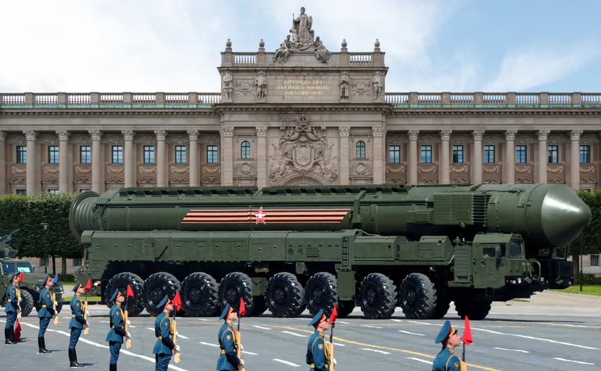

Debatt

Svenska Kärnvapen: ett måste!
I en allt osäkrare omvärld, med krig i vårt närområde, har försvarsfrågan dykt upp på politikernas, och svenska folkets, bord. Samtidigt klipper apelsinen i väst banden med Europa. Med det lämnas Sverige i ett extremt utsatt läge. Men jag har kommit fram till att lösningen på alla dessa problem är svenska kärnvapen!
Sedan kalla kriget har Sveriges försvar haft en avskräckande roll. Vi skulle se till att det skulle vara så kostsamt för en angripare att anfalla oss att det helt enkelt inte skulle vara värt det. Och vi lyckades, antar jag – ingen invaderade ju oss. Men idag ser hotbilden annorlunda ut. Ryssen agerar vårdslöst och jänkarna går inte att lita på. USA, eller snarare landets president, har redan hotat två allierade (!) med väpnat angrepp. När stormakterna börjar roffa åt sig måste vi, Sverige, säkerställa vår plats i världspolitiken för att inte bli deras offer. För att Sverige ska ha en plats i framtidens världsordning behöver vi vara jämlika med stormakterna, och det innebär delvis att vi bör utveckla kärnvapen.
Och avskräckningen är viktig. Vad fan har vi att försvara oss med? Två jollar och en traktor, ungefär. Skulle ryssen komma (förutsatt att de inte hade kört fast några mil utanför Kiev 2022) hade vi blivit golvade direkt. Eller USA! Man kan ju tydligen invadera vem som helst nu bara man känner för det (läs: Iran). Vi är ett land på drygt tio miljoner människor. Vi har inte en chans i ett utdraget krig. Därför borde vi se till att det aldrig kommer. Hur gör vi det? Med en svinhög tröskel (kärnvapen)! Har någon mage att anfalla oss kommer deras land stå i lågor, och ingen statschef är nog så dum att ta den risken.
Dessutom var vi ju nästan där. Mellan 1945 och 1972 bedrev Sverige ett eget kärnvapenprogram. Och vi var nära. 1965 meddelade FOA att man kunde konstruera en taktisk bomb på sex månader, ifall politikerna ville det. Sverige har alltså redan gjort allt det jobbiga vad gäller forskning, vilket gör det mycket billigare än exempelvis Manhattanprojektet. Men om vi av någon anledning inte vill ha en inhemskt bygd bomb kan man ju alltid låna av Frankrike, så kostnadsfrågan är inte ens att tala om.
Ifall vi bygger egna kärnvapen bestämmer vi dessutom hur vi vill använda dem. Vi behöver inte fråga USA eller Frankrike, utan kan agera ifrån vad som gynnar oss mest (till exempel att bomba Danmark).
Sammanfattningsvis innebär svenska kärnvapen att Sverige får en plats vid bordet i den nya världsordningen, att vi skyddar vårt land och att vi bestämmer hur vi vill använda dem. Jag ser inga nackdelar med det och kommer inte att ta några frågor.